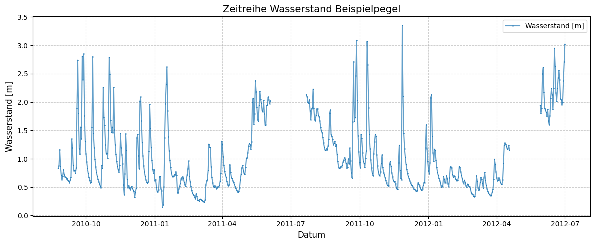

Jupyter Notebooks, Python und KI-unterstütztes Programmieren#
Einführungsnotebook zum Kurs „Wassermengenwirtschaft und Klimawandel”
Willkommen zum ersten Notebook. Dieses Notebook ist auf einen Tagesblock (2 × 1,5 h) angelegt und legt die Grundlage für alle folgenden Übungen.
Lernziele#
Nach Bearbeitung dieses Notebooks könnt Ihr:
Jupyter-Zellen ausführen, die Umgebung aufsetzen (lokal / Binder / Colab) und die drei zentralen Bibliotheken
pandas,numpy,matplotlibeinsetzen.Die wichtigsten Python-Bausteine lesen und anpassen: Variablen, Datentypen, Funktionen,
if-Anweisungen,for-Schleifen, Listen und Dictionaries.Eine reale hydrologische CSV-Datei einlesen, Datentyp- und Lückenprobleme diagnostizieren und mit
pandasbereinigen.KI-Assistenten (GitHub Copilot und Chat-LLMs wie Claude / ChatGPT) gezielt und kritisch einsetzen — Prompts formulieren, generierten Code verstehen, validieren und notfalls verwerfen.
Das Kursziel ist Hydrologie, nicht Programmierung. Python und KI sind Werkzeuge, die Ihr nicht beherrschen müsst wie ein Software-Engineer — aber Ihr müsst sie lesen, prüfen und verantworten können. Der rote Faden dieses Notebooks ist deshalb: Grundlagen reichen, um KI-Output kritisch zu bewerten.
Zeitplan (Richtwert)#
Abschnitt |
Dauer |
Inhalt |
|---|---|---|
A |
20 min |
Setup, Lernziele, KI-Rolle |
B |
45 min |
Python-Basics kompakt |
Pause |
15 min |
|
C |
60 min |
Datenimport, Qualitätscheck, Plot (durchgespieltes Beispiel) |
D |
45 min |
Arbeiten mit GitHub Copilot und Chat-LLMs |
E |
15 min |
Meta-Reflexion, Checkliste, Ausblick Übung 1 |
Der Zeitplan ist eine Orientierung — Ihr werdet in der Praxis an einzelnen Stellen länger hängen bleiben. Das ist normal. Die Blöcke sind so geschnitten, dass Ihr nach Block C den eigentlichen Arbeitsablauf eines Ingenieurs mit Daten einmal komplett durchlaufen habt.
Umgebung einrichten#
Dieses Notebook benötigt pandas, numpy und matplotlib.
Lokale Umgebung (empfohlen): Richtet gemäß der README.md eine Conda-Umgebung ein und installiert die Pakete aus requirements.txt. Öffnet das Notebook danach in VS Code (mit der Python- und Jupyter-Extension) oder im klassischen Jupyter-Browserinterface — beides funktioniert. VS Code hat den Vorteil, dass GitHub Copilot dort nativ integriert ist (siehe Block D).
Binder: Binder richtet die Umgebung automatisch ein. Keine manuelle Installation nötig. Copilot ist in Binder nicht verfügbar.
Google Colab: Führt die folgende Zelle aus und startet die Laufzeit danach neu (Runtime > Restart runtime). Copilot ist in Colab nicht verfügbar; Google bietet dort jedoch mit „Gemini in Colab” ein eigenes LLM an.
# Zelle nur ausführen, wenn in Colab gearbeitet wird
import sys
if 'google.colab' in sys.modules:
print("Installing packages for Colab...")
%pip install pandas numpy matplotlib
print("Installation complete. Please restart the runtime (Runtime > Restart runtime).")
Zellen ausführen — die Mechanik#
Eine Jupyter-Zelle führt Ihr aus mit:
Shift + Enter — Zelle ausführen und zur nächsten springen (empfohlener Default)
Ctrl + Enter — Zelle ausführen, Cursor bleibt in der Zelle
Klick auf den Run-Pfeil in der Symbolleiste
Wichtig: Zellen werden in der Ausführungsreihenfolge interpretiert, nicht in der Darstellungsreihenfolge. Die Zahl links neben einer Codezelle ([3]:) zeigt, als wievielte Zelle sie ausgeführt wurde. Wenn Ihr eine Zelle oben ändert und weiter unten erneut ausführt, kann der Kernel Zustände mischen — im Zweifel hilft Kernel → Neu starten und alle Zellen ausführen.
Die Rolle von KI in diesem Kurs#
Ihr werdet in diesem Kurs mit GitHub Copilot (über den kostenlosen GitHub Student Developer Pack — aktiviert Euren Account vor dem nächsten Termin) und ergänzend mit einem Chat-LLM (Claude, ChatGPT, Gemini) arbeiten. Wir sehen diese Werkzeuge als normale Teile des Werkzeugkastens — vergleichbar mit dem Taschenrechner im Hydraulikpraktikum.
Was KI für Euch gut kann:
Boilerplate-Code vorschlagen (Imports, Matplotlib-Grundgerüste, Schleifen).
Fehlermeldungen erklären.
Alternative Formulierungen eines Codestücks zeigen.
Was KI nicht für Euch erledigen kann:
Entscheiden, ob Eure Daten plausibel sind.
Einheiten prüfen (ist der Wert in m oder cm? in m³/s oder cfs?).
Die Verantwortung für ein Ergebnis übernehmen. Die liegt bei Euch.
Genau deshalb lernt Ihr in Block B noch ein Minimum an Python selbst: nicht, um KI zu ersetzen, sondern um deren Vorschläge lesen und bewerten zu können. In Block D sehen wir dann konkret, wie der kombinierte Workflow aussieht.
Block B — Python-Basics auf der Kurzstrecke#
Dieser Block ist bewusst knapp gehalten. Die Beispiele sind, wo möglich, hydrologisch motiviert. Wenn Euch etwas fremd vorkommt: nicht weiterlesen, sondern die Zelle direkt darüber modifizieren, nochmal ausführen, Ergebnis anschauen. Das ist der schnellste Lernweg in einem Notebook.
1. Variablen und Datentypen#
Eine Variable ist ein Name für einen Wert. Die vier wichtigsten einfachen Datentypen:
Typ |
Zweck |
Beispiel |
|---|---|---|
|
ganze Zahl |
|
|
Dezimalzahl |
|
|
Text (in Anführungszeichen) |
|
|
Wahrheitswert |
|
Mit type(...) fragt man den Typ einer Variable ab. Einheiten gehören bei uns konventionell in den Variablennamen (..._m3s, ..._m) — das ist kein Python-Zwang, aber guter Stil und erspart später Einheitenfehler.
# Vier Variablen mit den vier Grundtypen
anzahl_pegel = 7 # int
mittlerer_abfluss_m3s = 12.4 # float
pegelname = "Rinderbach" # str
ist_hochwasser = False # bool
for name, wert in [("anzahl_pegel", anzahl_pegel),
("mittlerer_abfluss_m3s", mittlerer_abfluss_m3s),
("pegelname", pegelname),
("ist_hochwasser", ist_hochwasser)]:
print(f"{name:25s} = {wert!r:15s} → {type(wert).__name__}")
anzahl_pegel = 7 → int
mittlerer_abfluss_m3s = 12.4 → float
pegelname = 'Rinderbach' → str
ist_hochwasser = False → bool
2. Type-Casting — Typen umwandeln#
Manchmal kommt ein Wert in der „falschen” Form an. Klassisches Beispiel: eine Zahl ist als Text (str) gespeichert und lässt sich nicht rechnen. Dann castet man:
int(x)— nach Ganzzahl (schneidet Nachkommastellen ab, rundet nicht!)float(x)— nach Dezimalzahlstr(x)— nach Text
# Beispiel: Wasserstand als String aus einer CSV — in float umwandeln
wasserstand_str = "1.47"
wasserstand_float = float(wasserstand_str)
print(f"{wasserstand_str!r:10s} (Typ {type(wasserstand_str).__name__}) "
f"→ {wasserstand_float} (Typ {type(wasserstand_float).__name__})")
# int() schneidet ab, rundet nicht:
print(f"int(1.7) = {int(1.7)} <-- NICHT 2!")
'1.47' (Typ str) → 1.47 (Typ float)
int(1.7) = 1 <-- NICHT 2!
3. Funktionen#
Eine Funktion kapselt wiederverwendbaren Code. Syntax: def name(parameter): .... Mit return gibt die Funktion ein Ergebnis zurück.
Faustregel: sobald Ihr denselben Code zum dritten Mal schreibt, ist eine Funktion überfällig.
def abfluss_aus_wasserstand(stage_m, a=2.5, b=1.6):
'''
Potenzgesetz-Pegelschlüssel: Q = a * (stage)^b
Parameter:
stage_m (float): Wasserstand in Metern.
a, b (float): Kalibrierungsparameter (Default: Beispielwerte).
Rückgabe:
float: Abfluss in m³/s.
'''
return a * stage_m ** b
# Aufruf
q = abfluss_aus_wasserstand(1.4)
print(f"Bei stage = 1.4 m → Q ≈ {q:.2f} m³/s")
# Mit benannten Argumenten — genauso gültig, aber lesbarer:
q2 = abfluss_aus_wasserstand(stage_m=1.4, a=3.0, b=1.5)
print(f"Mit anderen Parametern → Q ≈ {q2:.2f} m³/s")
Bei stage = 1.4 m → Q ≈ 4.28 m³/s
Mit anderen Parametern → Q ≈ 4.97 m³/s
4. Kontrollfluss — if / else#
Mit if führt Ihr Code nur dann aus, wenn eine Bedingung wahr ist. Achtet auf den Doppelpunkt und die Einrückung (vier Leerzeichen). Python erzwingt die Einrückung syntaktisch.
abfluss_m3s = 185.0
warnschwelle_m3s = 150.0
if abfluss_m3s > warnschwelle_m3s:
print(f"WARNUNG: Abfluss {abfluss_m3s:.0f} m³/s "
f"über Schwelle ({warnschwelle_m3s:.0f} m³/s).")
else:
print(f"OK: Abfluss {abfluss_m3s:.0f} m³/s unter Schwelle.")
WARNUNG: Abfluss 185 m³/s über Schwelle (150 m³/s).
5. Listen, for-Schleifen und Dictionaries#
Für die späteren Übungen braucht Ihr drei Strukturen:
Liste (
[...]) — geordnete Sammlung, indiziert ab0.for-Schleife — „mache etwas für jedes Element in einer Liste”.Dictionary (
{...}) — ZuordnungSchlüssel → Wert, z.B. Pegelname → Einzugsgebietsgröße.
# Eine Liste aus Tages-Wasserständen [m]
wasserstaende_m = [1.12, 1.18, 1.23, 1.31, 1.47, 1.55, 1.48]
print(f"Anzahl Messungen: {len(wasserstaende_m)}")
print(f"Erster Wert: {wasserstaende_m[0]}")
print(f"Letzter Wert: {wasserstaende_m[-1]}")
# for-Schleife: Abfluss aus jedem Wasserstand schätzen
print("\nBerechnete Abflüsse:")
for i, stage in enumerate(wasserstaende_m):
q = abfluss_aus_wasserstand(stage) # Funktion von oben wiederverwendet
print(f" Tag {i+1}: stage = {stage:.2f} m → Q ≈ {q:.2f} m³/s")
Anzahl Messungen: 7
Erster Wert: 1.12
Letzter Wert: 1.48
Berechnete Abflüsse:
Tag 1: stage = 1.12 m → Q ≈ 3.00 m³/s
Tag 2: stage = 1.18 m → Q ≈ 3.26 m³/s
Tag 3: stage = 1.23 m → Q ≈ 3.48 m³/s
Tag 4: stage = 1.31 m → Q ≈ 3.85 m³/s
Tag 5: stage = 1.47 m → Q ≈ 4.63 m³/s
Tag 6: stage = 1.55 m → Q ≈ 5.04 m³/s
Tag 7: stage = 1.48 m → Q ≈ 4.68 m³/s
# Dictionary: Pegel → Einzugsgebietsgröße [km²]
pegel = {
"Rinderbach": 14.4,
"Ruhr": 4485.0,
"Rhein": 185000.0,
}
# Zugriff per Schlüssel
print(f"Einzugsgebiet Rinderbach: {pegel['Rinderbach']} km²")
# Über alle Einträge iterieren
print("\nAlle Pegel:")
for name, flaeche_km2 in pegel.items():
print(f" {name:15s} → {flaeche_km2:>10.1f} km²")
Einzugsgebiet Rinderbach: 14.4 km²
Alle Pegel:
Rinderbach → 14.4 km²
Ruhr → 4485.0 km²
Rhein → 185000.0 km²
Übung (1 min): Fügt dem
pegel-Dictionary einen weiteren Pegel hinzu — z.B."Emscher": 865.0oder"Lippe": 4889.0. Führt die Zelle erneut aus. Fertig? Dann weiter zu Block C.
Block C — Von der CSV zur sauberen Zeitreihe#
Dieser Block ist das Herzstück des Notebooks. Wir gehen den vollständigen Arbeitsablauf einmal durch: Datei finden → einlesen → Qualitätsprobleme diagnostizieren → beheben → visualisieren.
Die Datenqualitätsprüfung ist ein unvermeidlicher Schritt in jeder Analyse. Häufig werden Daten verwendet, die extern erhoben wurden oder aus vielen Quellen stammen. In diesem Kurs arbeiten wir mit Wasserstands- und Durchflussdaten von Wasserwirtschaftsverbänden (z. B. Bergisch-Rheinischer Wasserverband, Ruhrverband) und Wetterdiensten (z. B. Deutscher Wetterdienst). In der Berufspraxis liegt die Verantwortung für die Datenqualitätsprüfung allein bei der Ingenieurin/dem Ingenieur — Daten sind oft die Grundlage für Entwurfsplanung und Entscheidungen. Datensätze aus offenen Quellen werden üblicherweise mit einem Haftungsausschluss ausgeliefert, siehe etwa den BRW-Haftungsausschluss zu Pegeldaten.
Da Datensätze immer größer werden, wird die programmatische Prüfung immer wichtiger — manuelles Nachschauen in Excel skaliert nicht. Dieses Notebook zeigt an einem echten Beispiel, wie ein einfacher Importfehler aussieht und wie man ihn systematisch behebt.
Hinweis: Das
#-Zeichen leitet in Python einen Kommentar ein. Alles rechts davon bis zum Zeilenende wird vom Interpreter ignoriert — es dient nur der Lesbarkeit für Menschen.
Bibliotheken laden#
Für die Datenanalyse nutzen wir externe Bibliotheken (Sammlungen von vorgefertigten Funktionen):
Bibliothek |
Alias |
Zweck |
|---|---|---|
|
|
Tabellarische Daten (DataFrames) einlesen und manipulieren |
|
|
Numerische Berechnungen auf Arrays |
|
|
Diagramme erstellen |
|
— |
Dateipfade handhaben (Standardbibliothek, kein Install nötig) |
# pandas: Tabellen-Manipulation (DataFrames)
import pandas as pd
# numpy: numerische Berechnungen auf Arrays (unter der Haube oft in pandas genutzt)
import numpy as np
# matplotlib: Plots
from matplotlib import pyplot as plt
# Pfad-Handling:
import os # klassisch, viel in älterem Code
from pathlib import Path # moderne Alternative (Python 3.4+) — s.u.
Dateipfade verstehen#
Ein grundlegendes, aber enorm wichtiges Konzept: Wie liest man eine Datei ein, die irgendwo im Dateisystem liegt?
In Windows/macOS klickt Ihr eine Datei an und das passende Programm öffnet sie. In Python geht es umgekehrt: Ihr müsst explizit angeben, wo die Datei liegt. Jupyter-Notebooks interpretieren Dateipfade relativ zum Speicherort der Notebook-Datei, sofern kein absoluter Pfad angegeben wird.
Unsere Notebook-Datei liegt unter
<Projektordner>/Inhalt/Notebooks/Einleitung/Einfuehrung_Datenimport.ipynb
Die Daten, die wir einlesen wollen, liegen unter
<Projektordner>/Inhalt/Projekt_Daten/Pegel_Beispiel_stage_data.csv
Das aktuelle Arbeitsverzeichnis#
Mit os.getcwd() (cwd = current working directory) lässt sich das aktuelle Arbeitsverzeichnis auslesen:
working_directory = os.getcwd()
print(f"Aktuelles Arbeitsverzeichnis:\n{working_directory}")
Aktuelles Arbeitsverzeichnis:
C:\Users\grego\OneDrive - Universitaet Duisburg-Essen\GitHub\repos\Wassermengenwirtschaft_und_Klimawandel\Inhalt\Notebooks\Einleitung
Hinweis: Wenn die letzte Zeile einer Codezelle ein Ausdruck ist (keine Zuweisung, kein
os.listdir(...)oderdf.columnsals Ein-Zeilen-Zellen.
# Inhalt des aktuellen Verzeichnisses
os.listdir(working_directory)
['.gitignore', '.ipynb_checkpoints', 'Einfuehrung_Datenimport.ipynb', 'img']
Im aktuellen Verzeichnis gibt es keine CSV-Datei — was logisch ist, denn wir sind im Ordner Notebooks/Einleitung/ und die Daten liegen woanders.
Versuch 1: Datei direkt einlesen (scheitert bewusst)#
Wir versuchen zunächst, die Datei mit pd.read_csv() direkt zu öffnen — ohne Pfadanpassung. Der Fehler, den wir erwarten, ist lehrreich:
# Dieser Versuch wird fehlschlagen, da die Datei nicht im aktuellen Verzeichnis liegt.
try:
data = pd.read_csv('Pegel_Beispiel_stage_data.csv')
except FileNotFoundError as e:
print(f"Fehler aufgetreten (erwartet): {e}")
Fehler aufgetreten (erwartet): [Errno 2] No such file or directory: 'Pegel_Beispiel_stage_data.csv'
Absoluter vs. relativer Pfad#
Es gibt zwei Wege, einer Datei den Weg zu weisen:
1. Absoluter Pfad — vom Wurzelverzeichnis des Dateisystems aus, z.B.
C:\Users\IhrName\Projekt\Inhalt\Projekt_Daten\Pegel_Beispiel_stage_data.csv (Windows) oder
/home/ihrname/Projekt/Inhalt/Projekt_Daten/Pegel_Beispiel_stage_data.csv (Linux/macOS).
Nachteil: funktioniert nur auf genau diesem Computer — verschiebt Ihr das Projekt oder teilt es mit einer Kommilitonin, bricht es.
2. Relativer Pfad — relativ zum Ort der Notebook-Datei. Portabel, also bevorzugt.
.— aktuelles Verzeichnis...— ein Verzeichnis nach oben.
Wir sind in Inhalt/Notebooks/Einleitung/, die Daten in Inhalt/Projekt_Daten/. Also: zweimal nach oben (../../) und dann in Projekt_Daten/.
# Eine Ebene höher: Ordner 'Notebooks/'
os.listdir('../')
['.ipynb_checkpoints',
'Einleitung',
'Hausarbeit',
'RTC_BlueRiver',
'Uebung_1',
'Uebung_2']
# Zwei Ebenen höher: Ordner 'Inhalt/' — hier liegt 'Projekt_Daten'
os.listdir('../../')
['Einleitung.md',
'img',
'markdown.md',
'Notebooks',
'Notebook_Daten',
'Projekt_Daten',
'simple_reservoir',
'_build',
'_config.yml',
'_toc.yml']
# Inhalt des Daten-Ordners
os.listdir('../../Projekt_Daten')
['measured_EC_data_A.csv',
'measured_EC_data_B.csv',
'measured_EC_data_C.csv',
'measurement_calibration_A.csv',
'measurement_calibration_B.csv',
'measurement_calibration_C.csv',
'Metadata_A.txt',
'Metadata_B.txt',
'Metadata_C.txt',
'Pegel_Beispiel_stage_data.csv',
'Project_QH_table_2021.csv',
'regionaler_Abfluss']
Der relative Pfad zur Daten-Datei ist also ../../Projekt_Daten/Pegel_Beispiel_stage_data.csv.
Pfade sauber bauen — und das DRY-Prinzip#
Gemäß dem Prinzip Don’t Repeat Yourself speichert man Pfade in Variablen — einmal oben im Notebook, danach nur noch über den Variablennamen referenziert. Mehrmaliges Tippen = höhere Fehleranfälligkeit.
Variablennamen sollten aussagekräftig sein und Einheiten nicht verschleiern. Wenn Ihr einen mittleren Jahresabfluss speichert, ist qa heute verständlich, aber in einem Jahr niemandem mehr klar — avg_annual_flow_m3s enthält den Zweck und die Einheit (m³/s ↔ „cubic metres per second”). Einheiten sind wichtig.
# ----- Variante A: klassisch mit os.path.join (sehr verbreitet in älterem Code) -----
data_folder_relative = '../../Projekt_Daten/'
file_name = 'Pegel_Beispiel_stage_data.csv'
demo_data_path = os.path.join(data_folder_relative, file_name)
print("Variante A (os.path.join):")
print(f" {demo_data_path}")
# ----- Variante B: modern mit pathlib (Python 3.4+) -----
data_folder = Path('../../Projekt_Daten')
demo_data_path_pl = data_folder / file_name # der '/'-Operator baut den Pfad
print("\nVariante B (pathlib):")
print(f" {demo_data_path_pl}")
print(f" existiert? → {demo_data_path_pl.exists()}")
Variante A (os.path.join):
../../Projekt_Daten/Pegel_Beispiel_stage_data.csv
Variante B (pathlib):
..\..\Projekt_Daten\Pegel_Beispiel_stage_data.csv
existiert? → True
Hinweis zu
pathlib: Für neue Projekte istpathlib.Pathder empfohlene Weg — er löst das Windows/Unix-Backslash-Problem automatisch und lässt sich eleganter lesen. In älteren Code-Basen (und in vielen LLM-Antworten) trefft Ihr aber weiterhin aufos.path.join— beide sind korrekt. In diesem Notebook nutzen wir im Weiteren dieos.path.join-Variante, damit Ihr beide Schreibweisen gesehen habt.
Versuch 2: Datei mit relativem Pfad einlesen#
try:
df = pd.read_csv(demo_data_path)
print("Datei erfolgreich eingelesen!")
except FileNotFoundError:
print("Fehler: Datei nicht unter dem angegebenen Pfad gefunden. Bitte Pfad prüfen!")
Datei erfolgreich eingelesen!
Erste Dateninspektion und Qualitätschecks#
Nach erfolgreichem Einlesen ist der nächste Schritt: einen ersten Blick werfen. pandas bietet dafür eine Reihe sehr nützlicher Funktionen.
Befehl |
Zweck |
|---|---|
|
erste / letzte |
|
Tupel |
|
Spalten, Datentypen, Non-Null-Counts — der wichtigste Check! |
|
Statistiken für numerische Spalten |
|
nur die Datentypen |
|
Anzahl fehlender Werte pro Spalte |
# Erste 5 Zeilen
print("--- head() ---")
display(df.head())
# Form
print(f"\n--- shape ---")
print(df.shape)
# Zusammenfassung
print("\n--- info ---")
df.info()
--- head() ---
| ID | PARAM | Date | year | month | day | Value | |
|---|---|---|---|---|---|---|---|
| 0 | 00XX000 | 2 | 2010/08/25 | 2010 | 8 | 25 | 0.83 |
| 1 | 00XX000 | 2 | 2010/08/26 | 2010 | 8 | 26 | 0.876 |
| 2 | 00XX000 | 2 | 2010/08/27 | 2010 | 8 | 27 | 1.16 |
| 3 | 00XX000 | 2 | 2010/08/28 | 2010 | 8 | 28 | 0.867 |
| 4 | 00XX000 | 2 | 2010/08/29 | 2010 | 8 | 29 | 0.711 |
--- shape ---
(677, 7)
--- info ---
<class 'pandas.core.frame.DataFrame'>
RangeIndex: 677 entries, 0 to 676
Data columns (total 7 columns):
# Column Non-Null Count Dtype
--- ------ -------------- -----
0 ID 677 non-null object
1 PARAM 677 non-null int64
2 Date 677 non-null object
3 year 677 non-null int64
4 month 677 non-null int64
5 day 677 non-null int64
6 Value 677 non-null object
dtypes: int64(4), object(3)
memory usage: 37.1+ KB
# Deskriptive Statistiken — mit include='all' auch für nicht-numerische Spalten
print("--- describe(include='all') ---")
display(df.describe(include='all'))
--- describe(include='all') ---
| ID | PARAM | Date | year | month | day | Value | |
|---|---|---|---|---|---|---|---|
| count | 677 | 677.0 | 677 | 677.000000 | 677.000000 | 677.000000 | 677 |
| unique | 1 | NaN | 677 | NaN | NaN | NaN | 406 |
| top | 00XX000 | NaN | 2010/08/25 | NaN | NaN | NaN | NaN |
| freq | 677 | NaN | 1 | NaN | NaN | NaN | 87 |
| mean | NaN | 2.0 | NaN | 2011.079764 | 6.446086 | 15.819793 | NaN |
| std | NaN | 0.0 | NaN | 0.674661 | 3.574085 | 8.853510 | NaN |
| min | NaN | 2.0 | NaN | 2010.000000 | 1.000000 | 1.000000 | NaN |
| 25% | NaN | 2.0 | NaN | 2011.000000 | 3.000000 | 8.000000 | NaN |
| 50% | NaN | 2.0 | NaN | 2011.000000 | 6.000000 | 16.000000 | NaN |
| 75% | NaN | 2.0 | NaN | 2012.000000 | 10.000000 | 24.000000 | NaN |
| max | NaN | 2.0 | NaN | 2012.000000 | 12.000000 | 31.000000 | NaN |
Wichtige Beobachtung: df.describe() zeigt uns, dass die Spalte Value als object (vermutlich String) gelesen wurde — nicht als Zahl. Das wird gleich ein Problem, wenn wir rechnen wollen.
Der Fehler, der zeigt, warum Typen wichtig sind#
# Versuch, den Mittelwert der 'Value'-Spalte zu berechnen — schlägt fehl
try:
mean_value = df['Value'].mean()
print(f"Mittelwert: {mean_value}")
except TypeError as e:
print(f"Fehler beim Berechnen des Mittelwerts (erwartet): {e}")
print("→ Grund: Die Spalte 'Value' hat keinen numerischen Datentyp.")
Fehler beim Berechnen des Mittelwerts (erwartet): Could not convert string ' 0.830.876 1.160.8670.7110.6320.6960.8070.7140.6850.6740.6520.6490.6210.6080.5790.6260.676 1.35 1.190.8830.7860.7980.7430.838 1.89 2.74 1.8 1.18 1.08 1.56 1.35 2.81 2.39 2.85 1.76 1.31 1.090.949 0.830.7420.6710.6210.5740.586 1.56 2.8 1.45 1.190.9930.8550.7630.6950.6420.5920.5620.5190.4850.882 0.83 2.26 1.73 1.59 1.25 1.09 1.1 1.01 1.5 2.79 2.49 1.68 1.47 1.56 1.46 2.26 1.51 1.25 1.080.9570.8690.8030.765 0.89 1.45 1.19 1.070.9160.538 0.370.735 1.44 1.150.6390.4920.5260.4850.4580.4910.5120.4780.4470.423 0.320.4070.482 1.37 1.43 1.05 0.82 2.01 2.09 1.67 1.29 1.050.876 0.770.6910.6280.5880.5690.594 1.13 1.96 1.54 1.20.9730.8170.7490.8060.6090.6310.4940.4210.4210.4580.6840.6890.4730.4330.1490.1870.508 1.37 1.97 2.31 2.62 1.85 1.39 1.140.9720.848 0.750.6950.6790.6890.7210.7170.7730.7070.4020.4030.4690.5140.5650.6610.6340.6840.6590.589 0.540.5150.6280.721 0.820.9610.6880.5930.5140.4410.4030.3710.3530.3240.2930.3850.3390.265 0.270.2530.2860.2890.2710.2710.2550.2410.2340.2790.5430.6110.6330.799 1.26 1.2 1.20.8580.6710.5780.5120.4950.5270.5070.4720.4870.5060.5030.5320.6040.741 1.31 1.26 1.040.8830.7810.7170.6750.6040.5430.5220.5460.8970.7620.6680.6550.6130.5830.5480.5080.4780.4440.4220.4120.4290.493 0.630.731 0.840.8820.7850.7360.7280.854 1.01 1.02 1.11 1.22 1.27 1.25 1.17 1.3 2 2.07 1.61 1.79 2.38 2.18 1.91 1.69 1.66 1.94 2.19 2.05 1.98 1.85 1.83 2.03 1.79 1.59 1.6 1.94 1.95 2.09 2.04 1.97 2.02 NaN NaN NaN NaN NaN NaN NaN NaN NaN NaN NaN NaN NaN NaN NaN NaN NaN NaN NaN NaN NaN NaN NaN NaN NaN NaN NaN NaN NaN NaN NaN NaN NaN NaN NaN NaN NaN NaN NaN NaN NaN NaN NaN NaN NaN NaN NaN 2.13 2.09 2 1.98 2.04 1.85 1.69 1.88 1.9 2.23 1.89 1.69 1.67 1.77 1.88 1.88 1.77 1.74 1.67 1.56 1.49 1.46 1.38 1.28 1.2 1.15 1.15 1.18 1.16 1.23 1.34 1.8 1.86 1.42 1.4 1.34 1.25 1.27 1.31 1.22 1.25 1.080.9560.8460.8340.8420.8610.8580.8870.9480.977 1.02 0.99 0.920.8370.8490.9970.908 1.190.9660.754 0.66 1.65 2.71 1.66 1.73 2.46 3.09 2.03 1.41 1.12 0.940.838 1.43 1.36 1.110.9590.9180.849 1.01 1.14 3.07 2.66 1.9 1.43 1.180.9820.8380.742 0.7 1.09 1.3 1.43 1.4 1.070.8780.7740.7120.7030.7690.923 1.070.8510.7550.7210.6680.6210.5730.536 0.520.5240.9040.9530.8660.7530.6870.6180.5930.6010.5570.4910.4630.4660.928 1.240.798 0.660.626 3.35 2.1 1.45 1.18 1.030.9060.8190.745 0.69 0.650.6150.5740.545 0.530.5090.469 0.46 0.450.4360.4260.4430.5790.5470.5210.4880.4530.4440.4740.5290.5860.573 1.19 1.6 1.180.9560.7920.7390.933 2.08 2.13 1.4 1.110.953 1.17 1.150.9740.8470.7590.7060.6530.6120.5730.4990.524 0.510.6890.6390.5810.5750.7040.6480.5590.5060.6620.8550.8550.8410.7270.6780.7030.688 0.650.6280.6110.6220.6860.8640.8470.7720.7070.6490.5980.5620.624 0.580.5210.5010.5550.5450.5160.504 0.470.4030.3830.3730.3420.3310.3410.452 0.70.6050.4920.4450.4650.5870.6740.6360.5680.4840.6640.7590.6210.5320.4750.4280.3970.3770.3640.3460.3540.4160.4610.6360.9930.9010.7710.6630.6090.6230.6680.6280.5850.553 0.550.6340.924 1.24 1.28 1.26 1.22 1.17 1.18 1.24 1.15 NaN NaN NaN NaN NaN NaN NaN NaN NaN NaN NaN NaN NaN NaN NaN NaN NaN NaN NaN NaN NaN NaN NaN NaN NaN NaN NaN NaN NaN NaN NaN NaN NaN NaN NaN NaN NaN NaN NaN NaN 1.94 1.8 1.89 2.5 2.61 2.17 1.89 1.86 1.82 1.75 1.87 1.67 1.6 1.76 2.07 2.24 2.13 1.87 2.24 2.95 2.63 2.16 2.01 2.24 2.43 2.56 2.39 2.06 2.04 1.95 2 2.38 2.71 3.02' to numeric
→ Grund: Die Spalte 'Value' hat keinen numerischen Datentyp.
Der Fehler (TypeError oder ähnlich) bestätigt: Die Value-Spalte ist Text, obwohl sie wie eine Zahl aussieht. Das ist ein klassisches Symptom von kleinen Darstellungsproblemen in der Quelldatei (Dezimaltrenner, Leerzeichen, Fehlermarkierungen wie "—" oder "NA").
Zugriff auf Spalten#
df.columns
Index(['ID', 'PARAM', 'Date', 'year', 'month', 'day', 'Value'], dtype='object')
Achtung, Klassiker: Spaltennamen mit führenden Leerzeichen sind eine häufige Fehlerquelle.
"Value"und" Value"sind für Python nicht dasselbe:
'Value' == ' Value'
False
# Erster Wert der Spalte — mit dessen Typ
first_value = df['Value'][0]
print(f"Erster Wert: {first_value!r}")
print(f"Datentyp: {type(first_value).__name__}")
Erster Wert: ' 0.83'
Datentyp: str
Datentyp konvertieren#
Da wir mit den Wasserständen rechnen wollen, brauchen wir einen numerischen Typ — float, weil Wasserstände Dezimalstellen haben.
Zwei Wege:
df['neu'] = df['alt'].astype(float)— schnell, aber wirftValueError, wenn ein einziger Wert nicht konvertierbar ist.df['neu'] = pd.to_numeric(df['alt'], errors='coerce')— ersetzt Problemwerte durchNaN(Not a Number). Robuster und oft die bessere Wahl.
Gute Praxis: der neuen Spalte einen aussagekräftigen Namen mit Einheit geben — stage_m.
try:
df['stage_m'] = df['Value'].astype(float)
print("Konvertierung zu float erfolgreich.")
print(f"Datentyp der neuen Spalte 'stage_m': {df['stage_m'].dtype}")
print("\nErste Werte:")
display(df[['Value', 'stage_m']].head())
except ValueError as e:
print(f"Fehler (ValueError): {e}")
print("→ pd.to_numeric(df['Value'], errors='coerce') wäre eine robuste Alternative.")
Konvertierung zu float erfolgreich.
Datentyp der neuen Spalte 'stage_m': float64
Erste Werte:
| Value | stage_m | |
|---|---|---|
| 0 | 0.83 | 0.830 |
| 1 | 0.876 | 0.876 |
| 2 | 1.16 | 1.160 |
| 3 | 0.867 | 0.867 |
| 4 | 0.711 | 0.711 |
# Jetzt können wir den mittleren Wasserstand berechnen:
mean_stage = df['stage_m'].mean()
print(f"Mittlerer Wasserstand: {mean_stage:.2f} m")
Mittlerer Wasserstand: 1.04 m
Fehlende Werte und Visualisierung#
Die Konvertierung ging glatt — aber das heißt nicht, dass die Daten lückenlos sind. isnull().sum() zählt die Anzahl fehlender Werte pro Spalte:
print("Anzahl fehlender Werte pro Spalte:")
print(df.isnull().sum())
Anzahl fehlender Werte pro Spalte:
ID 0
PARAM 0
Date 0
year 0
month 0
day 0
Value 0
stage_m 87
dtype: int64
Beobachtung: Die Spalte stage_m enthält NaN-Werte. isnull().sum() ist der schnellste Weg, Datenlücken zu erkennen.
Für Zeitreihen-Plots setzen wir die Date-Spalte als Index:
# Date-Spalte in Datetime-Objekte umwandeln und als Index setzen
try:
df.index = pd.to_datetime(df['Date'])
print("'Date'-Spalte erfolgreich als DatetimeIndex gesetzt.")
display(df.head(3))
except Exception as e:
print(f"Fehler beim Setzen des DatetimeIndex: {e}")
'Date'-Spalte erfolgreich als DatetimeIndex gesetzt.
| ID | PARAM | Date | year | month | day | Value | stage_m | |
|---|---|---|---|---|---|---|---|---|
| Date | ||||||||
| 2010-08-25 | 00XX000 | 2 | 2010/08/25 | 2010 | 8 | 25 | 0.83 | 0.830 |
| 2010-08-26 | 00XX000 | 2 | 2010/08/26 | 2010 | 8 | 26 | 0.876 | 0.876 |
| 2010-08-27 | 00XX000 | 2 | 2010/08/27 | 2010 | 8 | 27 | 1.16 | 1.160 |
# Zeitreihe plotten
fig, ax = plt.subplots(figsize=(12, 5))
ax.plot(df.index, df['stage_m'], label='Wasserstand [m]',
marker='.', linestyle='-', markersize=2, alpha=0.7)
ax.set_xlabel('Datum', size=12)
ax.set_ylabel('Wasserstand [m]', size=12)
ax.set_title('Zeitreihe Wasserstand Beispielpegel', size=14)
ax.legend()
ax.grid(True, linestyle='--', alpha=0.6)
fig.tight_layout()
plt.show()

Im Plot sind Lücken erkennbar, die zu den NaN-Werten passen. Wir zählen sie gezielt:
gaps = df[df['stage_m'].isnull()]
print(f"Anzahl Zeilen mit fehlenden Wasserstandsdaten: {len(gaps)}")
if not gaps.empty:
print("\nErste Zeilen mit Lücken:")
display(gaps.head())
Anzahl Zeilen mit fehlenden Wasserstandsdaten: 87
Erste Zeilen mit Lücken:
| ID | PARAM | Date | year | month | day | Value | stage_m | |
|---|---|---|---|---|---|---|---|---|
| Date | ||||||||
| 2011-06-05 | 00XX000 | 2 | 2011/06/05 | 2011 | 6 | 5 | NaN | NaN |
| 2011-06-06 | 00XX000 | 2 | 2011/06/06 | 2011 | 6 | 6 | NaN | NaN |
| 2011-06-07 | 00XX000 | 2 | 2011/06/07 | 2011 | 6 | 7 | NaN | NaN |
| 2011-06-08 | 00XX000 | 2 | 2011/06/08 | 2011 | 6 | 8 | NaN | NaN |
| 2011-06-09 | 00XX000 | 2 | 2011/06/09 | 2011 | 6 | 9 | NaN | NaN |
Lücken schließen: lineare Interpolation#
Für eine durchgehende Zeitreihe bietet pandas die Methode .interpolate(). method='linear' zieht zwischen den bekannten Punkten eine Gerade. Wichtig: Interpolation ist eine Annahme über die fehlenden Werte — keine Messung. Für Hochwasseranalysen solltet Ihr sehr vorsichtig damit sein; für Plots ist sie meist okay.
# Original nicht überschreiben — neue Spalte mit interpolierten Werten
df['stage_m_interpolated'] = df['stage_m'].interpolate(method='linear')
print("Fehlende Werte nach Interpolation:")
print(df['stage_m_interpolated'].isnull().sum())
Fehlende Werte nach Interpolation:
0
# Original (Punkte) und interpolierte Version (Linie) im Vergleich
fig, ax = plt.subplots(figsize=(12, 5))
ax.plot(df.index, df['stage_m'],
label='Original (mit Lücken)',
marker='.', linestyle='None', markersize=3, color='blue', alpha=0.6)
ax.plot(df.index, df['stage_m_interpolated'],
label='Linear interpoliert',
linestyle='-', color='red', alpha=0.8)
ax.set_xlabel('Datum', size=12)
ax.set_ylabel('Wasserstand [m]', size=12)
ax.set_title('Vergleich: Original vs. interpolierte Wasserstandsdaten', size=14)
ax.legend()
ax.grid(True, linestyle='--', alpha=0.6)
fig.tight_layout()
plt.show()
Zwischenfazit Block C#
Ihr habt jetzt einen vollständigen Workflow gesehen:
Pfad aufbauen (relativ, mit
os.path.joinoderpathlib).CSV einlesen mit
pd.read_csv().Erstinspektion mit
head(),shape,info(),describe().Typprobleme diagnostizieren (
objectstattfloat) und beheben (astype/pd.to_numeric).Fehlende Werte zählen (
isnull().sum()) und ggf. füllen (interpolate).Visualisieren mit
matplotlib, um Auffälligkeiten zu sehen, die in reinen Zahlen untergehen.
Das ist genau der Ablauf, den Ihr in Übung 1 selbst durchführen werdet — mit einem anderen Datensatz.
Mini-Reflexion: Schreibt in ein, zwei Sätzen auf (als Kommentar in einer neuen Codezelle oder im Moodle-Forum): Welcher Schritt war hier der Moment, an dem ein erfahrener Analyst gemerkt hätte „da stimmt etwas nicht”, ohne den Code auszuführen? (Hinweis: die Antwort hat mit
describe(include='all')zu tun.)
Block D — Arbeiten mit GitHub Copilot und Chat-LLMs#
Dieser Block behandelt den praktischen Workflow, den Ihr ab jetzt in allen Übungen einsetzen dürft (und sollt). Er unterscheidet zwei Klassen von KI-Werkzeugen, weil sie sich im Alltag sehr unterschiedlich anfühlen:
Werkzeug |
Wirkt wie … |
Stärken |
Grenzen |
|---|---|---|---|
GitHub Copilot (Inline in VS Code) |
Ein Autocomplete-Steroid — schlägt beim Tippen direkt in der Codezelle vor |
schnell, lokal, code-nah, kennt Eure Imports |
sieht wenig Kontext, erklärt nichts, kann subtil falsch liegen |
Copilot Chat / Claude / ChatGPT |
Ein Gesprächspartner im Seitenpanel oder Browser-Tab |
erklärt, diskutiert, kann Stacktraces lesen, schlägt Designs vor |
muss kopiert/gepastet werden, kennt Eure Daten nur durch das, was Ihr ihm gebt |
Beide haben denselben Kernfehler: sie erfinden manchmal Dinge (Halluzination). Deshalb ist Euer Job immer: vorschlagen lassen → verstehen → prüfen → erst dann übernehmen.
1. Copilot aktivieren (einmalig)#
Meldet Euch mit Eurer Uni-Mailadresse für das GitHub Student Developer Pack an — darin ist GitHub Copilot Pro kostenlos enthalten.
Installiert in VS Code die Extensions Python, Jupyter und GitHub Copilot (+ optional GitHub Copilot Chat).
Meldet Euch in VS Code mit Eurem GitHub-Account an (
Strg+Umschalt+P→ „GitHub: Sign in”).Öffnet dieses Notebook in VS Code. Ihr solltet jetzt unten rechts ein kleines Copilot-Icon sehen.
Wenn Ihr lieber im klassischen Jupyter-Interface bleibt: Copilot-Inline-Vorschläge gibt es dort nicht nativ, aber Ihr könnt einfach einen Chat-LLM im Browser-Tab parallel geöffnet halten. Der Rest dieses Blocks funktioniert in beiden Setups.
2. Copilot Inline — der Tab-Workflow#
In VS Code zeigt Copilot beim Tippen in einer Codezelle graue Vorschläge an:
Tab — Vorschlag akzeptieren
Esc — Vorschlag verwerfen
Alt + ] / Alt + [ — nächster / vorheriger Alternativvorschlag
Prompt-Prinzip für Inline: Copilot liest Euren umgebenden Code (inkl. Kommentaren!) und vervollständigt basierend darauf. Das heißt: ein präziser Kommentar vor der Codezeile ist Euer Prompt.
Beispiel — probiert das im VS-Code-Editor in einer neuen Zelle:
# Plotte das tägliche Minimum und Maximum von df['stage_m_interpolated'] pro Monat
# als Flächendiagramm. X-Achse: Datum, Y-Achse: Wasserstand [m].
Wenn Ihr nach diesem Kommentar zwei Zeilen freilasst und zu tippen beginnt (fig, ax = ), schlägt Copilot in aller Regel einen kompletten, halbwegs brauchbaren Plot vor.
Faustregel: Ein guter Inline-Prompt ist ein gut formulierter Kommentar. Schlechte Kommentare → schlechte Vorschläge.
3. Chat-LLM — das Dialog-Modell#
Für alles, was über „eine Zeile Code vervollständigen” hinausgeht (Entwürfe, Debugging, Erklärungen), nutzt Ihr ein Chat-LLM im separaten Fenster — Copilot Chat, Claude oder ChatGPT.
Drei Prompts, drei Qualitäten#
Gleiche Aufgabe, drei Formulierungen — der Unterschied ist erheblich:
Prompt |
Erwartbare Antwort |
|---|---|
❌ „Wie mache ich einen Plot?” |
Generisches Matplotlib-Tutorial; ignoriert Eure Daten. |
⚠️ „Wie plotte ich meinen DataFrame in Python?” |
Beispielcode auf einem erfundenen DataFrame; Ihr müsst alles anpassen. |
✅ „Ich habe einen Pandas DataFrame |
Direkt einsatzbarer Code, der zu Eurem DataFrame passt. |
Warum Prompt 3 besser ist:
Er nennt die Variablennamen, die Ihr tatsächlich benutzt (
df,stage_m).Er nennt die Bibliothek (
matplotlib), nicht „irgendein Plot”.Er nennt konkrete Anforderungen (Achsenbeschriftung, Lücken, Figsize).
Er sagt nicht, wie der Code aussehen soll — nur, was das Ergebnis leisten muss.
Faustregel: Ein Chat-Prompt soll so klingen, als würdet Ihr eine studentische Hilfskraft bitten. „Schreib mir was” ist kein Auftrag — „nimm diesen DataFrame, filtere Zeilen X, und plotte Y vs. Z mit Achsenbeschriftung” ist einer.
4. Der Verifikationsworkflow — warum das alles zählt#
Jeder Vorschlag, egal ob Inline oder Chat, durchläuft bei Euch vier Schritte:
Lesen — versteht Ihr, was der Code tut? Bei jedem Aufruf: welche Funktion, welche Bibliothek, welcher Rückgabewert?
Ausführen — im Notebook in einer eigenen Zelle. Nie direkt in produktivem Code-Abschnitt einfügen.
Prüfen — hier wird es hydrologisch:
df.shapevor- und nachher: passt die Zeilenzahl?df.describe(): sind Minimum/Maximum/Mittelwert plausibel?Einheiten: rechnet der Code in m oder cm, in m³/s oder cfs?
Plot: sehen die Werte so aus, wie sie sollten?
Übernehmen oder verwerfen — erst danach in die Hauptzellen Eures Notebooks.
Beispiel: ein LLM schlägt vor, df.dropna() statt df.interpolate() zu verwenden. Beides ist Code, der läuft. Der Unterschied:
# Check: wie viele Zeilen verliere ich durch dropna() im Vergleich zu interpolate()?
n_original = len(df)
n_after_dropna = len(df.dropna(subset=['stage_m']))
n_missing = df['stage_m'].isnull().sum()
print(f"Zeilen gesamt: {n_original}")
print(f"Fehlend in 'stage_m': {n_missing}")
print(f"Zeilen nach dropna(subset=...): {n_after_dropna}")
print(f"Verhältnis: {n_after_dropna/n_original:.1%} der Originaldaten bleiben übrig.")
Zeilen gesamt: 677
Fehlend in 'stage_m': 87
Zeilen nach dropna(subset=...): 590
Verhältnis: 87.1% der Originaldaten bleiben übrig.
Wenn Euch diese Ausgabe sagt, dass dropna z.B. 20 % der Zeitreihe löscht, dann wisst Ihr: das ist kein gleichwertiger Ersatz für Interpolation — das ist eine andere Entscheidung mit anderen Konsequenzen. Genau das ist die Prüfung, die KI nicht übernehmen kann.
5. Fehlermeldungen als Dialog#
Stacktraces sind in Wahrheit der Anwendungsfall, in dem LLMs glänzen. Workflow:
Komplette Fehlermeldung kopieren (von
Traceback (most recent call last):bis zur letzten Zeile).In den Chat-LLM einfügen, mit einem Satz Kontext: was wolltet Ihr tun, welcher Code hat den Fehler erzeugt.
Antwort lesen, Lösung prüfen (siehe Verifikationsworkflow oben).
Beispiel-Prompt-Vorlage:
„Ich bekomme in einem Jupyter-Notebook folgenden Fehler, wenn ich
df['Value'].astype(float)aufrufe:ValueError: could not convert string to float: '1.47 '
dfist ein Pandas DataFrame mit Pegel-Wasserstandsdaten (BRW). Was ist die Ursache, und welche drei Alternativen zum Beheben gibt es (mit ihren jeweiligen Trade-offs)?”
Das funktioniert weit besser als „warum geht mein Code nicht”.
6. Halluzinationen — wenn KI eine Funktion erfindet#
LLMs erfinden gelegentlich Python-Funktionen, die es gar nicht gibt. Ein reales Beispiel, das Studierenden immer wieder passiert:
„Nutze
df.interpolate_nans(method='cubic')für die Lückenfüllung.”
Diese Funktion existiert nicht in pandas. Richtig wäre df.interpolate(method='cubic'). Woran Ihr eine Halluzination erkennt:
Die Methode ist in der offiziellen pandas-Dokumentation nicht zu finden.
Im Notebook wird beim Ausführen ein
AttributeError: 'DataFrame' object has no attribute '...'geworfen.Der Parameter (
method=...) wird in einer Variante vorgeschlagen, die die Originalfunktion gar nicht unterstützt.
Gegenmittel: Bei jedem neuen Funktionsnamen, den Euch ein LLM vorschlägt, einmal kurz die Doku oder StackOverflow öffnen. Das dauert 20 Sekunden und spart Euch später Stunden Fehlersuche.
7. Datenschutz und Vertraulichkeit#
Keine personenbezogenen Daten in Prompts (weder Eure noch die von Anderen).
Projektdaten unter NDA / vertrauliche Pegeldaten dürfen nicht in ein Chat-LLM eingegeben werden. Copilot (mit Business-/Enterprise-Lizenz) ist hier strenger; die kostenlose Studenten-Version und Chat-LLMs sind das nicht — behandelt sie wie ein öffentliches Forum.
Bei Unsicherheit: abstrahiert (ersetzt Pegelnamen, Orte, konkrete Projektbezüge durch Platzhalter). Ein LLM kann Euch bei einem Datenqualitätsproblem genauso gut helfen, wenn die Spalte im Prompt
stage_mstattPegel_KlientXY_vertraulichheißt.Für die Hausarbeit in diesem Kurs dürft Ihr KI frei nutzen — dokumentiert aber in einem kurzen Satz, wo und wie.
Block E — Meta-Reflexion, Checkliste, Ausblick#
Zusammenfassung#
In diesem Notebook habt Ihr fünf Dinge gelernt:
Jupyter bedienen — Zellen ausführen, Kernel verstehen, Umgebung einrichten.
Python lesen — Variablen, Typen, Funktionen,
if, Listen,for-Schleifen, Dictionaries.Dateipfade beherrschen — absolute vs. relative Pfade,
os.path.joinundpathlib.Einen kompletten Datenworkflow durchgespielt — von der CSV über Qualitätschecks bis zur interpolierten Zeitreihe und ihrem Plot.
KI-Assistenten souverän einsetzen — Inline (Copilot) und per Chat, mit klarem Verifikationsworkflow.
Der wichtigste Take-away: Ihr seid der Filter zwischen Daten und Entscheidung. KI beschleunigt Eure Arbeit, aber ersetzt nicht Eure Urteilsfähigkeit über Plausibilität, Einheiten und Datenqualität.
Checkliste — bevor ich KI-Code übernehme#
Kopiert Euch diese Liste irgendwo hin, wo Ihr sie in den Übungen wiederfindet (als Kommentar am Anfang Eures Übungs-Notebooks ist ein guter Platz):
[ ] Ich habe den Code komplett gelesen und verstehe jede Zeile.
[ ] Ich habe ihn in einer eigenen Zelle (nicht mitten im Haupt-Flow) ausgeführt.
[ ] shape/describe/head sehen plausibel aus.
[ ] Einheiten stimmen (m vs. cm, m³/s vs. cfs, °C vs. °F).
[ ] Bei neuen Funktionsnamen: kurz in der offiziellen Doku geprüft.
[ ] Bei Interpolation / Lückenfüllung / Filter: ich kann begründen, WARUM diese Methode.
[ ] Ich könnte den Code in der Verteidigung meiner Hausarbeit erklären.
Wenn eine dieser Checkboxen nicht gesetzt ist: nicht übernehmen, nachfragen oder manuell schreiben.
Ausblick — was kommt in Übung 1#
In Übung 1: Hochwasserstatistik mit Python wendet Ihr genau den Workflow aus Block C auf einen neuen Datensatz an — und geht einen Schritt weiter zu statistischen Methoden (u.a. Pearson-Typ-III-Verteilung). Ihr werdet dort:
eine neue CSV einlesen und auf Qualität prüfen,
statistische Kennwerte berechnen (Mittelwert, Standardabweichung, Schiefe),
logarithmische Transformationen anwenden,
Jährlichkeiten und Bemessungsabflüsse abschätzen.
Vorbereitung für Übung 1 (5–10 min):
Aktiviert das GitHub Student Developer Pack, falls noch nicht geschehen.
Installiert Copilot in VS Code (siehe Block D.1).
Führt in diesem Notebook mindestens einmal
Kernel → Neu starten und alle Zellen ausführenaus — wenn das ohne Fehler durchläuft, ist Eure Umgebung bereit.
Viel Erfolg!